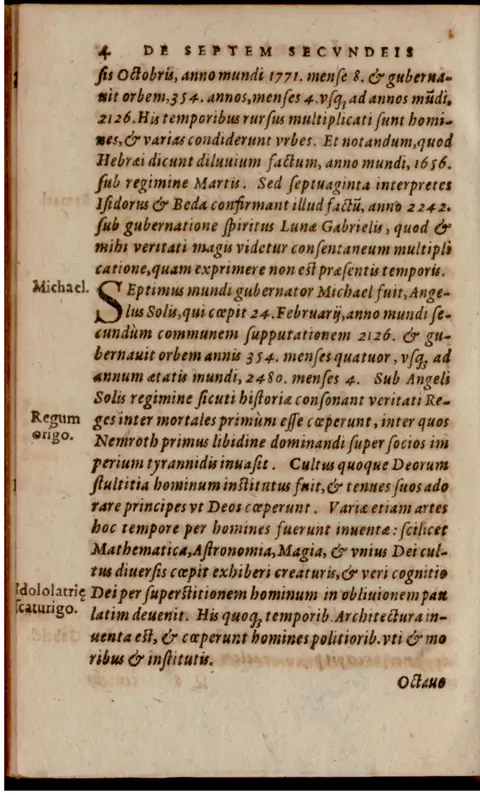
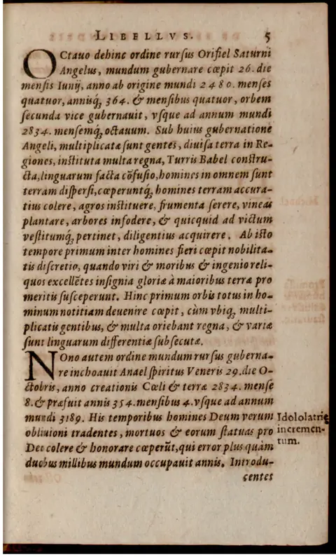
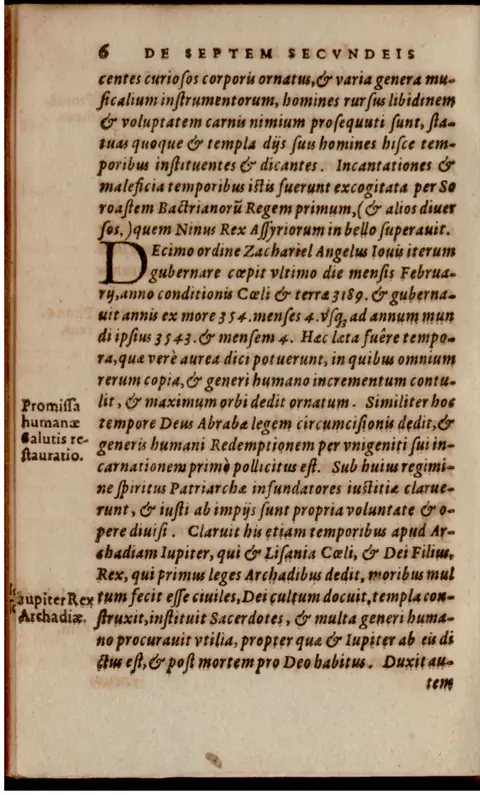

Polygraphiae libri VI
Six Books of Polygraphy
prdl-24391_polygraphiae-libri-vi · Style C / Damage-preserving review renderings
About These Review Renderings
These passages preserve damaged prose rather than smoothing it into false certainty. They keep OCR loss, embedded cipher tenors, and conjectural readings visible so readers can compare them against the Latin and source scan.
They should be treated as review renderings, not certified final editions.
Per-chunk renderings



Polygraphia VI — damage-preserving rendering, full_chunk_0124
Damage-preserving review rendering with tenor detection and footnoting. Damage class: heavy_damage_partial; OCR quality: 2/5.
Audit note — V1 silently normalized the damaged later tables and continued the numerical progression past legible text, obscuring column loss and OCR scannos as if the print were complete.
Polygraphia VI, Back-Matter: Numerical Letters
Closing Fragment before the Table
[unclear] we have characters for [unclear]. And it will be a matter of no great labor to grasp this method of numbering,^1 for those who already know the letters, if they have once committed it to memory. For this invention of ours can be useful to many, since with few letters it comprises many thousands in number; all these can at first glance, without any calculation, be distinguished and understood more clearly than daylight. Many think this cannot be done so easily by the figures of algorism,^2 especially in large numbers, at least by those less experienced in the art of reckoning.^3 For as soon as you have inspected with your eye any number, however large, you will be able both to understand it fully and to express it without circumlocution or division of speech. To show how easy this is, it is fitting that we set down the letters themselves reduced to number. Written 16 March, in the year 1508.^4
Order of Numerical Letters
The source gives a table of letter-signs and values. I preserve the OCR forms, including doubtful forms such as a i, repeated sw, repeated y, and tg 97:
a i; b 2; c 3; d 4; e 5; f 6; g 7; h 8; i 9; k 10; ka 11; kb 12; kc 13; kd 14; ke 15; kf 16; kg 17; kh 18; ki 19; l 20; la 21; lb 22; lc 23; ld 24; le 25; lf 26; lg 27; lh 28; li 29; m 30; ma 31; mb 32; mc 33; md 34; me 35; mf 36; mg 37; mh 38; mi 39; iij 40; iija 41; iijb 42; iijc 43; iijd 44; iije 45; iijf 46; iijg 47; iijh 48; iiji 49; n 50; na 51; nb 52; nc 53; nd 54; ne 55; nf 56; ng 57; nh 58; ni 59; o 60; oa 61; ob 62; oc 63; od 64; oe 65; of 66; og 67; oh 68; oi 69; p 70; pa 71; pb 72; pc 73; pd 74; pe 75; pf 76; pg 77; ph 78; pi 79; q 80; qa 81; qb 82; qc 83; qd 84; qe 85; qf 86; qg 87; qh 88; qi 89; r 90; ra 91; rb 92; rc 93; rd 94; re 95; rf 96; tg 97; rh 98; ri 99; 2 100; 2a 101; 2b 102; 2c 103; 2d 104; 2e 105; 2f 106; 2g 107; 2h 108; 2i 109; 2j 200; s 300; t 400; y 500; u 600; x 700; y 800; z 900; w 1000; wb 1002; wc 1003; wd 1004; we 1005; wf 1006; wg 1007; wh 1008; wi 1009; bw 2000; cw 3000; dw 4000; ew 5000; fw 6000; gw 7000; hw 8000; iw 9000; kw 10000; lw 20000; mw 30000; iiiw 40000; nw 50000; ow 60000; pw 70000; qw 80000; rw 90000; tw 100000; sw 200000; sw 300000; tw 400000; vw 500000; uw 600000; xw 700000.
Ancient Order of Numerical Letters
ym 800000; zym 900000; kym 1000000; lym 2000000; mym 3000000; iym 4000000; mym 5000000; oym 6000000; pym 7000000; qym 8000000; rym 9000000; wym 10000000; sym 20000000; sym 30000000; tym 40000000; vym 50000000; uym 60000000; xym 70000000; yym 80000000; zym 90000000; kym 100000000.
Behold, reader, you have the method by which you can adequately mark down and write every writable number with few letters; their extension, as you see, proceeds to infinity. But, as it was once customary to say in a proverb, “The weary ox plants its foot firmly”: whoever wishes to be content with the former things may follow the ancient method of numbering. In order that the unknowing may understand it more easily, it will not be tedious for me to give, in what follows, the form used by Hunibald the Frankish historiographer,^5 and also by Bede,^6 Rabanus,^7 Helpericus the monk,^8 and several of the ancients, in chronicles and ecclesiastical calculations,^9 as follows.
Numbering Method of Hunibald the Frank and Others
The printed/OCR table gives: i 1; ii 2; iii 3; iv 4; v 5; vj 6; vii 7; viiij 8; viiij 9; x 10; xi 11; xii 12; xiii 13; xiv 14; xv 15; xvj 16; xvij 17; xviij 18; xviiij 19; xx 20; xxx 30; xxxix 40; l 50; lx 60; lxx 70; lxxx 80; lxxxix 90; c 100; cc 200; ccc 300; cccc 400; D 500; dc 600; dce 700; dccc 800; dccccc 900.
Ancient Order of Numerical Letters, Continued
The next table is heavily damaged by column loss and displaced c markers. I preserve only what is legible without silently completing the progression:
M 1000; ij 2000; iii 3000; iv 4000; v 5000; vj 6000; vij 7000; viiij 8000; ix 9000; x 10000; xx 20000; xxx 30000; xxxx 40000; L 50000; lx 60000; lxx 70000; lxxx 80000; lxxxij 90000; ccc 100000; cc 200000; ccc 300000; cccc 400000; D 500000; dc 600000; dec 700000; dccc 800000; dcccc 900000; x 1000000; xj 1100000; xij 1200000; xiii 1300000; xiiiij 1400000; xv 1500000; xvij 1600000; xviiij 1700000; xviiiij 1800000; xix 1900000; xx 2000000; xxx 3000000; L 5000000; lx 6000000; lxx 7000000; lxxx 8000000; lxxxij 9000000; cc 20000000; ccc 30000000; cccc 40000000; [unclear]; dccc 80000000; [unclear]; dcccc 90000000; [unclear]; c 100000000; [unclear]; c 200000000; [unclear]; c 300000000; [unclear]; c 400000000; [unclear].
Concluding Note on the Ancient Frankish-German Method
We have brought down thus far, for the sake of example, the method of the ancient Franks of Germany^10 for writing numbers with Latin letters, so that we might also provide knowledge of it to those who do not know it. But where we departed from the common rule of computation in the apposition of the figures of algorism,^11 this was done not from error but for a reasonable cause: namely, lest we be weighed down in an excessive progression. There were also some who wrote larger numbers in this way:
cm. 100000; ccm. 200000; ccc. 300000; cccc. 400000; dm. 500000; dcm. 600000; dccm. 700000; dccc. 800000; dcccc. 900000; xc. 1000000; xx. 200000; xxx. 300000; xxxx. 400000; lcm. 500000; lxc. [value unclear]; lxxc. [value unclear]; lxxx. [value unclear]; lxxxx. [value unclear]; ic. [value unclear]; xcc. [value unclear]; xccc. [value unclear].
O IOAN [fragmentary heading or catchword; not translated].
^1. numerandi modum: a technical “method of numbering/reckoning,” here a cipher-like numerical notation by letters.
^2. figuras algaritmi: figures of algorism, i.e. Hindu-Arabic numerals as used in medieval/early-modern arithmetic; spelling algaritmi is normal early print variation.
^3. minus in arte calculatoria expertis: literally “less experienced in the calculating art”; not a separate class of professional calculators.
^4. Scripsi 16. Martij. Anno 1508: dated subscription by Trithemius; no embedded cipher tenor here.
^5. Hunibaldus Francus: legendary or pseudo-historical Frankish historiographer associated with early Frankish origins; named as an authority for old numerical practice.
^6. Bede: the Venerable Bede, early medieval English monk and computistical authority.
^7. Rabanus: Hrabanus Maurus, Carolingian theologian and encyclopedic writer.
^8. Helpericus monachus: Helperic/Helpericus, a monk associated with computistical writing; not to be confused with a place-name.
^9. calculationibus ecclesiasticis: ecclesiastical computations, especially computus for calendar and Easter reckoning.
^10. Antiquorum Germaniae Francorum: “the ancient Franks of Germany”; this is Trithemius’s antiquarian framing, not a modern ethnic-historical claim.
^11. appositione figurarum algaritmi: placement/apposition of algorismic figures; the author notes that the displayed notation departs from the ordinary computational rule.
^12. OCR scannos: ipfas for ipsas, extêlio likely for extensio, progredivit likely for progreditur, vulc likely for vult, praberemus for praeberemus, vii fuerût likely for usi fuerunt. Table damage includes repeated viiij, repeated sw, repeated y, tg 97, dce 700, and displaced c column markers; these are preserved rather than normalized.